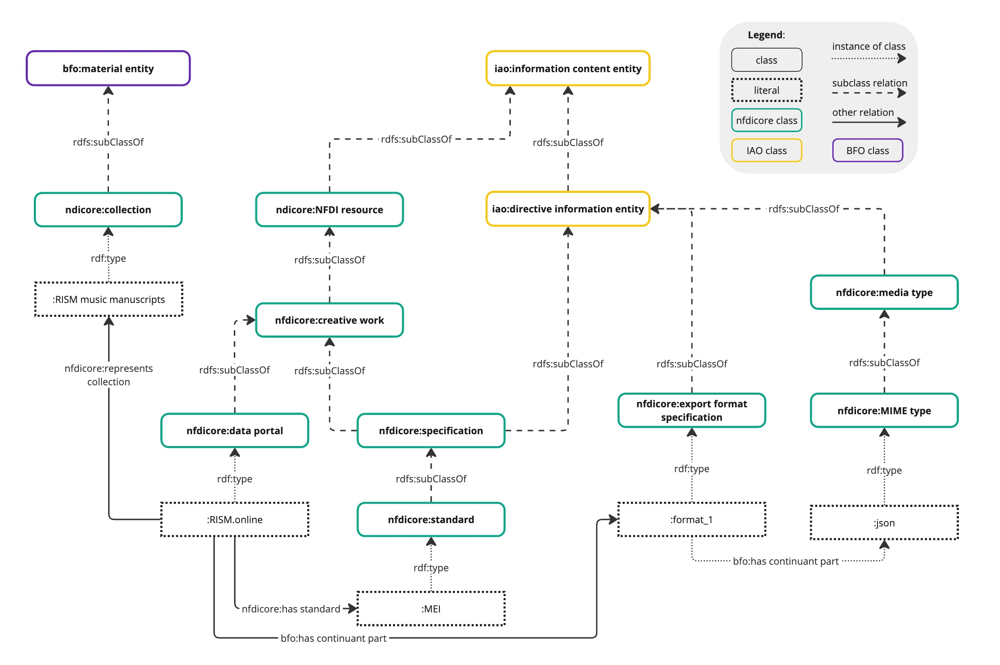
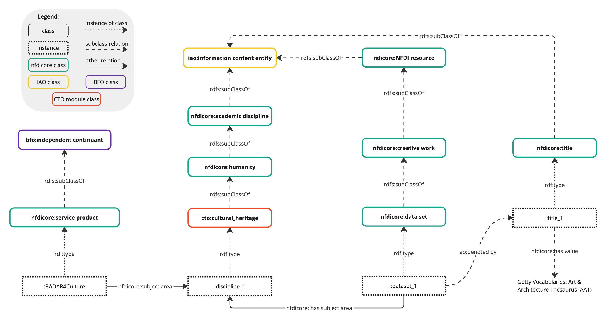
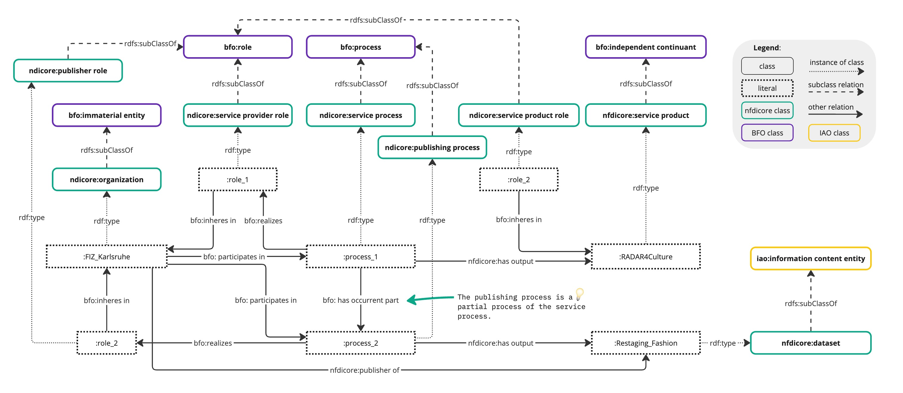
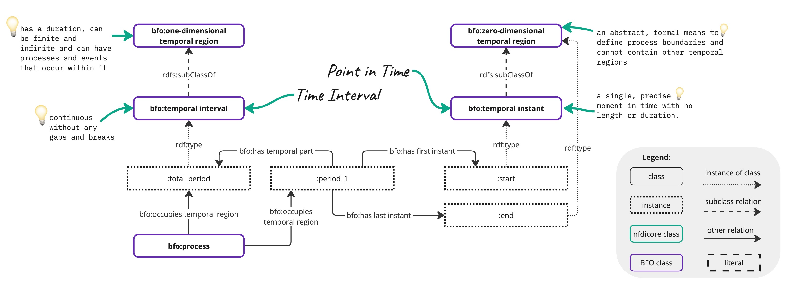
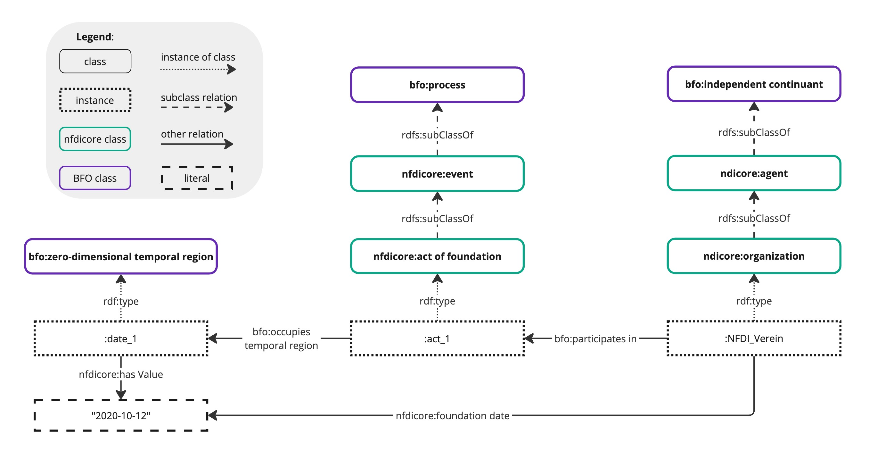

Usage Patterns
In this section usage patterns and A-Box examples are introduced.
NFDI Resources
Within NFDIcore, resources are continuants which encompass a wide range of digital creative works, including datasets, collections, and metadata, as well as offered products and services such as data portals, data curation, and data digitization.

stateDiagram
direction BT
#style definitions
classDef clazz fill:lightgrey,color:white
classDef individual font-size:small
#styling of classes
class bfo_occurrent clazz
class bfo_entity clazz
class bfo_continuant clazz
#relations
bfo_occurrent --> bfo_entity: subClassOf
# bfo_continuant --> bfo_entity: subClassOf
# bfo_process --> bfo_occurrent: subClassOf
# bfo_temporal_region --> bfo_occurrent: subClassOf
# bfo_one_dimensional --> bfo_temporal_region: subClassOf
# bfo_two_dimensional --> bfo_temporal_region: subClassOf
stateDiagram
direction BT
classDef clazz fill:lightgrey,color:white;
state "cto:CTO_0001005 (source item)" as CTO_SourceItem
class CTO_SourceItem clazz
state "nfdicore:NFDI_0000003 (organization)" as NFDI_organization
class NFDI_organization clazz
state "schema:DataFeed" as SCHEMA_DataFeed
class SCHEMA_DataFeed clazz
state "cto:CTO_0001024 (incipit)" as CTO_Incipit
class CTO_Incipit clazz
state "RISM Online" as org_rism
state "E5313" as feed_e5313
state "RISM Resource 201001959" as si_201001959
state "201001959 incipit 1.1.1" as inc_1_1_1
state "A''C/'B''D'BA/2G4BA/G-B''D/G4-2-/" as PATTERN_CLASS
class PATTERN_CLASS
state "C/" as TIMESIG
class TIMESIG
org_rism --> NFDI_organization:a
si_201001959 --> CTO_SourceItem:a
inc_1_1_1 --> CTO_Incipit:a
feed_e5313 --> SCHEMA_DataFeed:a
si_201001959 --> inc_1_1_1:CTO_has incipit
si_201001959 --> org_rism: NFDI_publishedBy
si_201001959 --> feed_e5313:CTO_isReferencedIn
inc_1_1_1 --> PATTERN_CLASS:CTO_hasPattern
inc_1_1_1 --> key_G:CTO_hasKey
inc_1_1_1 --> clef_C1:CTO_hasClef
inc_1_1_1 --> keysig_xF:CTO_hasKeySignature
inc_1_1_1 --> TIMESIG:CTO_hasIncipitTimeSignature
class RISM_201001959
class RISM_inc_1_1_1
class RISM-online
class E5313
class G
class C1
state "xF" as keysig_xF
NFDI resources can be associated with academic disciplines (nfdicore:academic discipline, NFDI_0000100) allowing for a more nuanced understanding of their context and relevance.

Agents
Likewise, in NFDIcore, the concept of Agents extends to both organizations and persons, serving as independent continuants within the BFO ontology. Agents are essential for management of research data resources, and include entities such as research institutions, consortia, universities, companies, and individual researchers or data scientists.
Within NFDIcore, agents can be directly linked to resources via different relations; may participate in processes (BFO_0000015) and be associated with diverse roles (BFO_0000023), e.g. nfdicore:publisher role (NFDI_0000193), nfdicore:contributor role (NFDI_0000118), etc. within the processes. Moreover, agents engage in diverse relationships with other agents, e.g. nfdicore:parent organization (NFDI_0000182).
Resources within NFDIcore engage in diverse relationships with agents, facilitated by various properties such as nfdicore:contributor, nfdicore:creator, nfdicore:publisher, and nfdicore:contactPoint. While these properties enable direct connections between agents and resources, they may lack some expressivity. E.g. additional information about the relationship like a temporal context, ordering (e.g. for authors). In scenarios requiring more detailed semantics to describe the relationship between an agent and a resource, the modeling proposed by BFO 2020 with processes and roles can be employed.
Processes
A process (BFO_0000015) can encompass subordinate processes and partial processes. Within NFDIcore, a process often serves to establish connections between agents and information content entities (IAO_0000030), defining the roles (BFO_0000023) of agents with respect to the involved information content entities.

Events and Time
The bfo:temporal region (BFO_0000008) is an occurrent and is used to represent the structure of time. Thereby, the bfo:zero-dimensional temporal region (BFO_0000148) represents a single instant in time, a precise point in time without any duration, e.g. the date when the NFDI Verein was founded (nfdicore:act of foundation, NFDI_0001020). In contrast, the one-dimensional temporal region (BFO_0000038) refers to a time interval which has a duration, can be finite as well as infinite and events can occur within it.

The nfdicore:event (NFDI_0000131) is associated with processes that represent an organized happening that unfolds in time. The nfdicore:event, classified as an occurrent (BFO_0000003), serves as a representation for various happenings such as conferences, and workshops.
